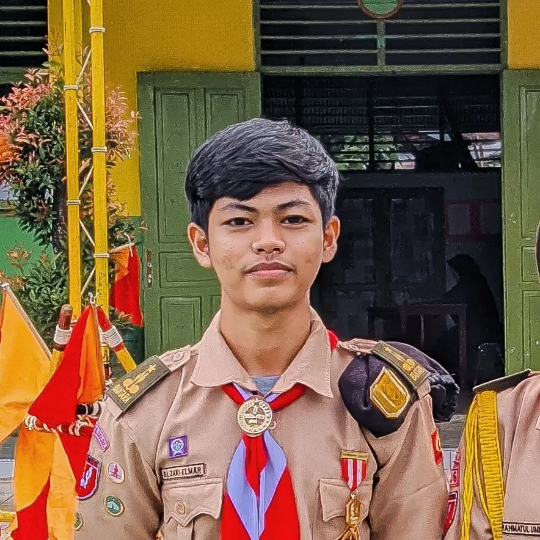
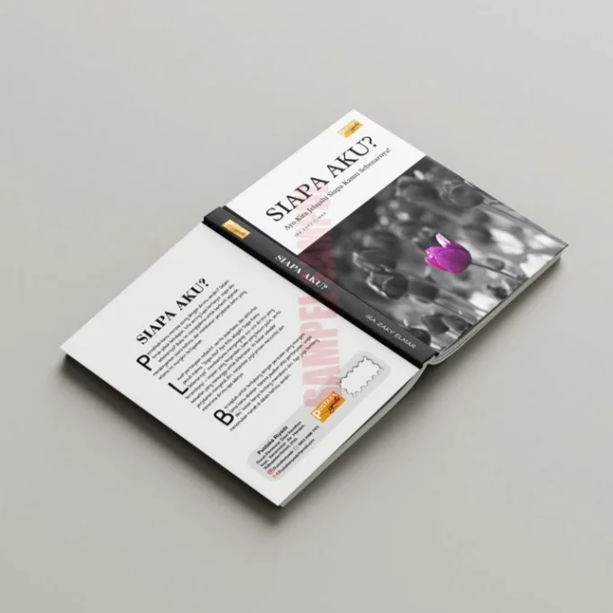

Web Developer (PHP & Laravel)
Mahasiswa Manajemen Informatika di Politeknik LP3I Padang yang sedang magang dan aktif membangun sistem web fungsional dengan basis arsitektur MVC, basis data relasional MySQL, dan desain antarmuka terstruktur.
3.79
IPK Akademik LP3I
BNSP
Junior Web Developer
1 Buku
Resmi Ber-ISBN Nasional

Status: Sedang Magang IT
D3 Manajemen Informatika • Politeknik LP3I Padang
Dokumentasi nyata dari aplikasi web fungsional berbasis Laravel, karya literasi resmi, dan desain identitas brand.
Platform pemungutan suara elektronik mahasiswa berbasis web untuk pemilihan raya BEM. Menggantikan proses pemilihan manual berbasis kertas yang memakan biaya dan waktu rekapitulasi lama.

Publikasi Resmi • 2023Penerbit Pustaka Riyadz
Buku motivasi dan refleksi diri yang ditulis secara mandiri dan resmi diterbitkan ber-ISBN nasional oleh Pustaka Riyadz.
Adobe & Canva
Perancangan identitas logo, poster promosi, dan materi grafis untuk unit usaha UMKM dan kegiatan organisasi kampus.
Menempuh pendidikan D3 Manajemen Informatika di Politeknik LP3I Padang dengan Indeks Prestasi Kumulatif 3.79 / 4.00.
Saat ini aktif menjalani program magang kerja industri IT, berfokus mempersiapkan diri untuk berkontribusi langsung sebagai Junior Web / Software Engineer di perusahaan teknologi sebelum masa wisuda.
Latar belakang Manajemen Informatika memberikan keunggulan ganda: menguasai penulisan sintaks program sekaligus memahami perancangan proses bisnis (analisis alur, pemodelan data ERD, dan normalisasi database).
Pemisahan logika model, view, dan controller yang rapi untuk kemudahan pemeliharaan aplikasi.
Perancangan skema relasional yang konsisten, meminimalkan redundansi, dan query teroptimasi.
Pengalaman memimpin UKM Relawan TIK dan kementerian BEM melatih komunikasi kerja tim dan koordinasi teknis.
Kemampuan mengurai logika koding rumit menjadi alur penjelasan sederhana yang mudah dimengerti rekan tim.
Teknologi yang digunakan secara aktif untuk membangun sistem web fungsional dan materi visual terstruktur.
Native & OOP
Fondasi UtamaMVC Framework
Auth, EloquentCI 3 & CI 4
Sistem KampusBasis Data
ERD & RelasionalDatabase Tool
Export & ImportUtility-First
Build CLI TerujiResponsif UI
Bootstrap 5Semantik Web
WCAG & SEOVanilla ES6+
DOM & InteraksiVersion Control
Branching & DeployUI/UX Wireframe
Desain AntarmukaPhotoshop & Canva
Identitas BrandValidasi kompetensi kerja resmi serta dedikasi kepemimpinan organisasi di tingkat perguruan tinggi dan nasional.
Politeknik LP3I Padang
Memimpin organisasi mahasiswa bidang TIK, memberikan pelatihan instalasi perangkat lunak dan troubleshooting komputer, serta mengedukasi literasi digital mahasiswa.
Badan Eksekutif Mahasiswa (BEM)
Mengembangkan dan mengimplementasikan sistem aplikasi E-Voting berbasis Laravel untuk pemilihan raya presiden mahasiswa guna memastikan transparansi suara dan efisiensi waktu rekapitulasi.
Badan Nasional Sertifikasi Profesi (BNSP Indonesia)
Tersertifikasi kompeten standar kerja nasional dalam pembuatan aplikasi web terstruktur, implementasi basis data relasional, dan pengujian sistem.
Meta Certified Developer Program (Coursera)
Kompetensi profesional dalam prinsip desain web responsif, UI interaktif, HTML5/CSS3 semantik, dan best practices antarmuka pengguna modern.
Kwarda Sumatera Barat • MAN 2 Solok
Terpilih sebagai perwakilan delegasi provinsi Sumatera Barat pada perhelatan Raimuna Nasional XII di Cibubur, serta konsisten berprestasi peringkat 3 besar selama masa studi di MAN 2 Solok.
Penerbit Pustaka Riyadz (ISBN Resmi)
Karya penulisan mandiri ber-ISBN tentang refleksi diri dan motivasi generasi muda yang terdokumentasi resmi secara nasional.
Membantu institusi pendidikan, UMKM, dan mahasiswa menyelesaikan kebutuhan sistem informasi dengan pendekatan yang transparan.
Rancang bangun landing page, company profile, portal lembaga, atau sistem manajemen UMKM yang cepat, ramah ponsel, dan mudah dikelola.
Pendampingan pemahaman alur koding dan logika pemrograman web (PHP, Laravel, CI, MySQL) untuk persiapan tugas akhir mahasiswa IT.
Perancangan logo unik yang proporsional dan mudah diaplikasikan pada media cetak, kemasan produk, maupun antarmuka aplikasi.
Saya terbuka untuk diskusi peluang kerja di perusahaan teknologi, proyek freelance website, maupun konsultasi sistem informasi.
Respon Langsung
+62 821-8940-6889
Komunikasi Resmi
irazaky24@gmail.com